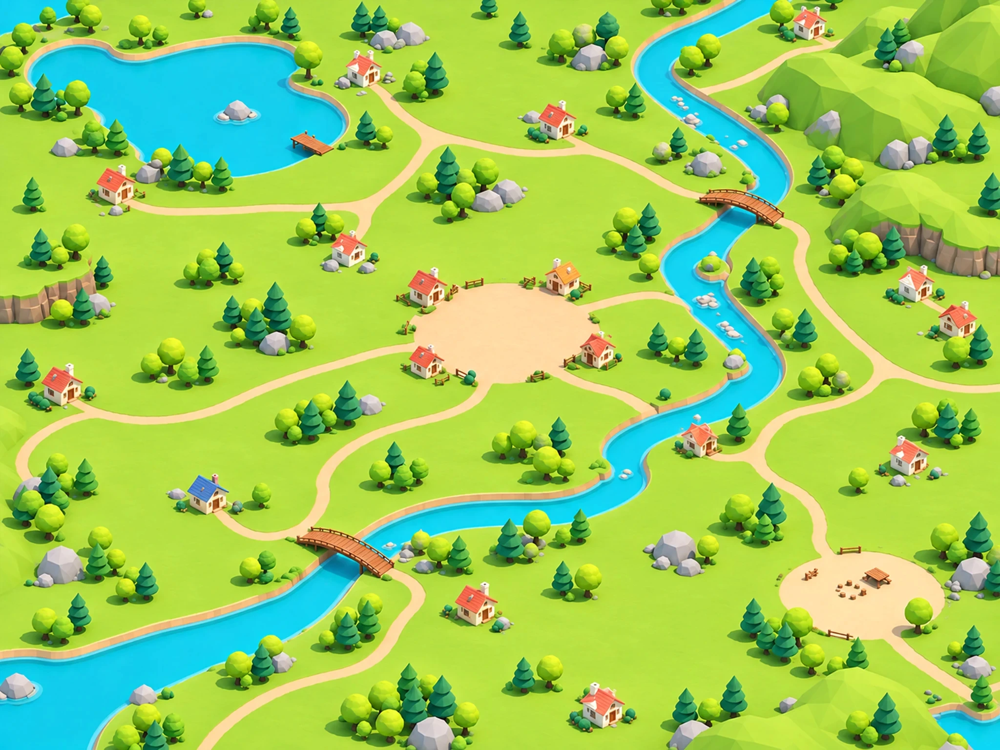

← 섬 선택
ON-DO
통합섬
!
✦ 내 고민과 닮은 이야기 찾기
찾아보기
상사와의 관계
번아웃
업무 적응
회의 스트레스
받고 싶은 위로
전체
공감해주세요
경험을 나눠주세요
의견을 들려주세요
초기화

−
100%
+
고민 나누기
어떤 고민을 나누고 싶나요?
닫기
고민 분야
업무량·스트레스
직장 내 관계·갈등
번아웃·무기력
불안·걱정
커리어 성장·역량
제목
필수 · 40자 이내
편하게 고민을 적어주세요.
받고 싶은 위로
공감해주세요
경험을 나눠주세요
의견을 들려주세요
연차 정보 공개
나만 보기
마음 내려놓기
혼자 견디지 않으셔도 괜찮아요.
지금 많이 힘드신 것 같아요. 필요한 도움을 바로 받아보세요.
자살예방상담전화 109 · 24시간
정신건강위기상담전화 1577-0199 · 24시간
확인